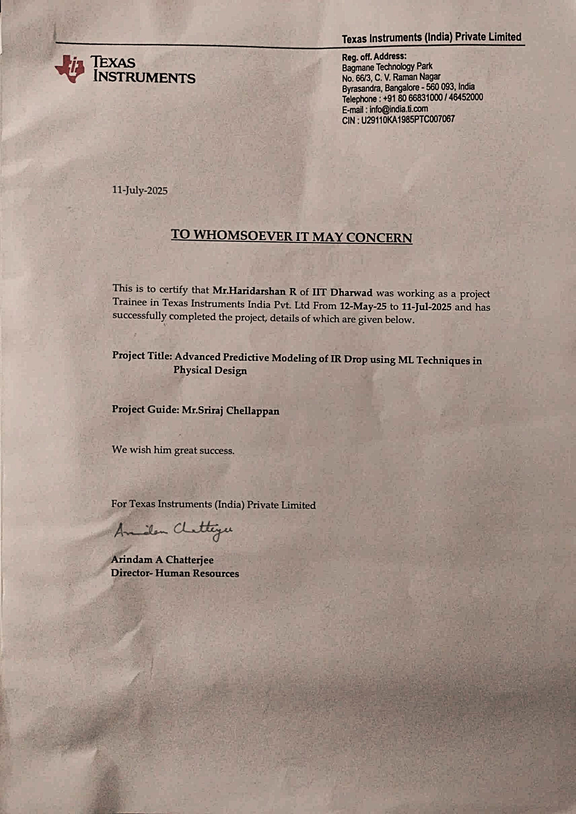

IR Drop Prediction at Early Design Cycle
Texas Instruments | May 2025 – Jul 2025 | Bangalore
- Built a Random Forest model to predict post-placement IR drop using layout and power features (pad distance, power density, pad count, instance count, neighborhood metrics).
- Trained the model under varying power pad locations and ratings, improving robustness across design scenarios.
- Explored ML-driven techniques to identify high-risk IR drop regions early in the PNR flow, reducing simulation dependency and improving runtime efficiency.
